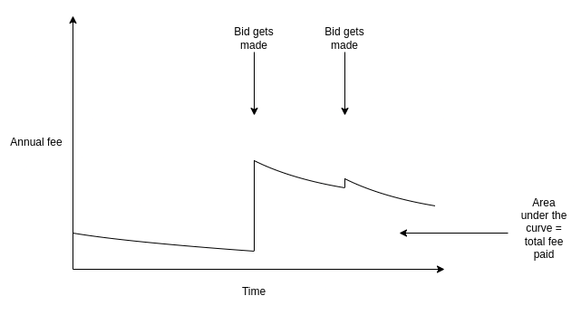
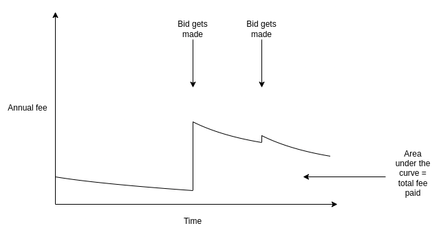

Should there be demand-based recurring fees on ENS domains?
2022 Sep 09
See all posts
Should there be demand-based recurring fees on ENS domains?
Special thanks to Lars Doucet, Glen Weyl and Nick Johnson for
discussion and feedback on various topics.
ENS domains today are cheap. Very cheap. The cost to register and
maintain a five-letter domain name is only $5
per year. This sounds reasonable from the perspective of one person
trying to register a single domain, but it looks very different when you
look at the situation globally: when ENS was younger, someone could have
registered all 8938 five-letter words in the Scrabble
wordlist (which includes exotic stuff like "BURRS", "FLUYT" and
"ZORIL") and pre-paid their ownership for a hundred years, all for the
price of a
dozen lambos. And in fact, many people did: today, almost all of
those five-letter words are already taken, many by squatters waiting for
someone to buy the domain from them at a much higher price. A random
scrape of OpenSea shows that about 40% of all these domains are for sale
or have been sold on that platform alone.
The question worth asking is: is this really the best way to allocate
domains? By selling off these domains so cheaply, ENS DAO is almost
certainly gathering far less revenue than it could, which limits its
ability to act to improve the ecosystem. The status quo is also bad for
fairness: being able to buy up all the domains cheaply was great for
people in 2017, is okay in 2022, but the consequences may severely
handicap the system in 2050. And given that buying a five-letter-word
domain in practice costs anywhere from 0.1 to 500
ETH, the notionally cheap registration prices are not actually
providing cost savings to users. In fact, there are deep
economic reasons
to believe that reliance on secondary markets makes domains
more expensive than a well-designed in-protocol mechanism.
Could we allocate ongoing ownership of domains in a better way? Is
there a way to raise more revenue for ENS DAO, do a better job
of ensuring domains go to those who can make best use of them, and at
the same time preserve the credible neutrality and the accessible very
strong guarantees of long-term ownership that make ENS valuable?
Problem
1: there is a fundamental tradeoff between strength of property rights
and fairness
Suppose that there are \(N\)
"high-value names" (eg. five-letter words in the Scrabble dictionary,
but could be any similar category). Suppose that each year, users grab
up \(k\) names, and some portion \(p\) of them get grabbed by someone who's
irrationally stubborn and not willing to give them up (\(p\) could be really low, it just needs to
be greater than zero). Then, after \(\frac{N}{k * p}\) years, no one will be
able to get a high-value name again.
This is a two-line mathematical theorem, and it feels too simple to
be saying anything important. But it actually gets at a crucial truth:
time-unlimited allocation of a finite resource is incompatible with
fairness across long time horizons. This is true for land; it's the
reason why there have been so
many land reforms throughout history, and it's a big part of why
many advocate for land taxes
today. It's also true for domains, though the problem in the
traditional domain space has been temporarily alleviated by a "forced
dilution" of early .com holders in the form of a mass introduction of
.io, .me, .network and many other domains. ENS has
soft-committed to not add new TLDs to avoid polluting the global
namespace and rupturing its chances of eventual integration with
mainstream DNS, so such a dilution is not an option.
Fortunately, ENS charges not just a one-time fee to register a
domain, but also a recurring annual fee to maintain it. Not all
decentralized domain name systems had the foresight to implement this;
Unstoppable Domains did not, and even goes so far as to proudly
advertise its preference for short-term consumer appeal over long-term
sustainability ("No renewal
fees ever!"). The recurring fees in ENS and traditional DNS are a
healthy mitigation to the worst excesses of a truly unlimited
pay-once-own-forever model: at the very least, the recurring fees mean
that no one will be able to accidentally lock down a domain forever
through forgetfulness or carelessness. But it may not be enough. It's
still possible to spend $500 to lock down an ENS domain for an entire
century, and there are certainly some types of domains that are in high
enough demand that this is vastly underpriced.
Problem
2: speculators do not actually create efficient markets
Once we admit that a first-come-first-serve model with low fixed fees
has these problems, a common counterargument is to say: yes, many of the
names will get bought up by speculators, but speculation is natural and
good. It is a free market mechanism, where speculators who actually want
to maximize their profit are motivated to resell the domain in such a
way that it goes to whoever can make the best use of the domain, and
their outsized returns are just compensation for this service.
But as it turns out, there has been academic research on this topic,
and it is not actually true that profit-maximizing auctioneers maximize
social welfare! Quoting Myerson
1981:
By announcing a reservation price of 50, the seller risks a
probability \((1 / 2^n)\) of keeping
the object even though some bidder is willing to pay more than \(t_0\) for it; but the seller also increases
his expected revenue, because he can command a higher price when the
object is sold.
Thus the optimal auction may not be ex-post efficient. To see more
clearly why this can happen, consider the example in the above
paragraph, for the case when \(n = 1\)
... Ex post efficiency would require that the bidder must always get the
object, as long as his value estimate is positive. But then the bidder
would never admit to more than an infinitesimal value estimate, since
any positive bid would win the object ... In fact the seller's optimal
policy is to refuse to sell the object for less than 50.
Translated into diagram form:

Maximizing revenue for the seller almost always requires accepting
some probability of never selling the domain at all, leaving it unused
outright. One important nuance in the argument is that
seller-revenue-maximizing auctions are at their most inefficient when
there is one possible buyer (or at least, one buyer with a valuation far
above the others), and the inefficiency decreases quickly once there are
many competing potential buyers. But for a large class of domains, the
first category is precisely the situation they are in. Domains that are
simply some person, project or company's name, for example, have one
natural buyer: that person or project. And so if a speculator buys up
such a name, they will of course set the price high, accepting a large
chance of never coming to a deal to maximize their revenue in the case
where a deal does arise.
Hence, we cannot say that speculators grabbing a large portion of
domain allocation revenues is merely just compensation for them ensuring
that the market is efficient. On the contrary, speculators can easily
make the market worse than a well-designed mechanism in the
protocol that encourages domains to be directly available for sale at
fair prices.
One
cheer for stricter property rights: stability of domain ownership has
positive externalities
The monopoly problems of overly-strict property rights on
non-fungible assets have been known for a long time. Resolving this
issue in a market-based way was the original goal of Harberger
taxes: require the owner of each covered asset to set a price at
which they are willing to sell it to anyone else, and charge an annual
fee based on that price. For example, one could charge 0.5% of the sale
price every year. Holders would be incentivized to leave the asset
available for purchase at prices that are reasonable, "lazy" holders who
refuse to sell would lose money every year, and hoarding assets without
using them would in many cases become economically infeasible
outright.
But the risk of being forced to sell something at any time can have
large economic and psychological costs, and it's for this reason that
advocates of Harberger taxes generally focus on industrial property
applications where the market participants are sophisticated. Where do
domains fall on the spectrum? Let us consider the costs of a business
getting "relocated", in three separate cases: a data center, a
restaurant, and an ENS name.
| Confusion from people expecting old location |
An employee comes to the old location, and unexpectedly finds it
closed. |
An employee or a customer comes to the old location, and
unexpectedly finds it closed. |
Someone sends a big chunk of money to the wrong address. |
| Loss of location-specific long-term investment |
Low |
The restaurant will probably lose many long-term customers for whom
the new location is too far away |
The owner spent years building a brand around the old name that
cannot easily carry over. |
As it turns out, domains do not hold up very well. Domain name owners
are often not sophisticated, the costs of switching domain names are
often high, and negative externalities of a name-change gone wrong can
be large. The highest-value owner of coinbase.eth may not
be Coinbase; it could just as easily be a scammer who would grab up the
domain and then immediately make a fake charity or ICO claiming it's run
by Coinbase and ask people to send that address their money. For
these reasons, Harberger taxing domains is not a great
idea.
Alternative
solution 1: demand-based recurring pricing
Maintaining ownership over an ENS domain today requires paying a
recurring fee. For most domains, this is a simple and very low $5 per
year. The only exceptions are four-letter domains ($160 per year) and
three-letter domains ($640 per year). But what if instead, we make the
fee somehow depend on the actual level of market demand for the
domain?
This would not be a Harberger-like scheme where you have to make the
domain available for immediate sale at a particular price.
Rather, the initiative in the price-setting procedure would fall on the
bidders. Anyone could bid on a particular domain, and if they keep an
open bid for a sufficiently long period of time (eg. 4 weeks), the
domain's valuation rises to that level. The annual fee on the domain
would be proportional to the valuation (eg. it might be set to 0.5% of
the valuation). If there are no bids, the fee might decay at a constant
rate.

When a bidder sends their bid amount into a smart contract to place a
bid, the owner has two options: they could either accept the bid, or
they could reject, though they may have to start paying a higher price.
If a bidder bids a value higher than the actual value of the domain, the
owner could sell to them, costing the bidder a huge amount of money.
This property is important, because it means that "griefing"
domain holders is risky and expensive, and may even end up benefiting
the victim. If you own a domain, and a powerful actor wants to
harass or censor you, they could try to make a very high bid for that
domain to greatly increase your annual fee. But if they do this, you
could simply sell to them and collect the massive payout.
This already provides much more stability and is more noob-friendly
than a Harberger tax. Domain owners don't need to constantly worry
whether or not they're setting prices too low. Rather, they can simply
sit back and pay the annual fee, and if someone offers to bid they can
take 4 weeks to make a decision and either sell the domain or continue
holding it and accept the higher fee. But even this probably does not
provide quite enough stability. To go even further, we need a compromise
on the compromise.
Alternative
solution 2: capped demand-based recurring pricing
We can modify the above scheme to offer even stronger guarantees to
domain-name holders. Specifically, we can try to offer the following
property:
Strong time-bound ownership guarantee: for any fixed
number of years, it's always possible to compute a fixed amount of money
that you can pre-pay to unconditionally guarantee ownership for at
least that number of years.
In math language, there must be some function \(y = f(n)\) such that if you pay \(y\) dollars (or ETH), you get a hard
guarantee that you will be able to hold on to the domain for at least
\(n\) years, no matter what happens.
\(f\) may also depend on other
factors, such as what happened to the domain previously, as long as
those factors are known at the time the transaction to register or
extend a domain is made. Note that the maximum annual fee after
\(n\) years would be the derivative
\(f'(n)\).
The new price after a bid would be capped at the implied maximum
annual fee. For example, if \(f(n) =
\frac{1}{2}n^2\), so \(f'(n) =
n\), and you get a bid of $5 after 7 years, the annual fee would
rise to $5, but if you get a bid of $10 after 7 years, the annual fee
would only rise to $7. If no bids that raise the fee to the max are made
for some length of time (eg. a full year), \(n\) resets. If a bid is made and rejected,
\(n\) resets.
And of course, we have a highly subjective criterion that \(f(n)\) must be "reasonable". We can create
compromise proposals by trying different shapes for \(f\):
| Exponential fee growth |
\(f(n) = \int_0^n p_0 *
1.1^n\) |
The fee can grow by a maximum of 10% per year (with
compounding). |
$836 |
$7.22m |
| Linear fee growth |
\(f(n) = p_0 * n +
\frac{15}{2}n^2\) |
The annual fee can grow by a maximum of $15 per year. |
$1250 |
$80k |
| Capped annual fee |
\(f(n) = 640 * n\) |
The annual fee cannot exceed $640 per year. That is, a domain in
high demand can start to cost as much as a three-letter domain, but not
more. |
$6400 |
$64k |
Or in chart form:

Note that the amounts in the table are only the theoretical
maximums needed to guarantee holding a domain for that number of
years. In practice, almost no domains would have bidders willing to bid
very high amounts, and so holders of almost all domains would end up
paying much less than the maximum.
One fascinating property of the "capped annual fee" approach
is that there are versions of it that are strictly more
favorable to existing domain-name holders than the status
quo. In particular, we could imagine a system where a domain
that gets no bids does not have to pay any annual fee, and a
bid could increase the annual fee to a maximum of $5 per year.
Demand from external bids clearly provides some signal about
how valuable a domain is (and therefore, to what extent an owner is
excluding others by maintaining control over it). Hence,
regardless of your views on what level of fees should be
required to maintain a domain, I would argue that you should find
some parameter choice for demand-based fees
appealing.
I will still make my case for why some superlinear \(f(n)\), a max annual fee that goes up over
time, is a good idea. First, paying more for longer-term security is a
common feature throughout the economy. Fixed-rate mortgages usually have
higher
interest rates than variable-rate mortgages. You can get
higher interest by providing deposits that are locked up for longer
periods of time; this is compensation the bank pays you for
providing longer-term security to the bank. Similarly,
longer-term government bonds typically have higher yields.
Second, the annual fee should be able to eventually adjust to
whatever the market value of the domain is; we just don't want that to
happen too quickly.
Superlinear \(f(n)\) values still
make hard guarantees of ownership reasonably accessible over pretty long
timescales: with the linear-fee-growth formula \(f(n) = p_0 * n + \frac{15}{2}n^2\), for
only $6000 ($120 per year) you could ensure ownership of the domain for
25 years, and you would almost certainly pay much less. The ideal of
"register and forget" for censorship-resistant services would still be
very much available.
From here to there
Weakening property norms, and increasing fees, is psychologically
very unappealing to many people. This is true even when these fees make
clear economic sense, and even when you can redirect fee revenue into a
UBI and mathematically show that the majority of people would
economically net-benefit from your proposal. Cities have a hard time adding
congestion pricing, even when it's painfully clear that the only two
choices are paying congestion fees in dollars and paying congestion fees
in wasted time and
weakened mental health driving in painfully slow traffic. Land value taxes, despite being in
many ways one
of the most effective and least harmful taxes out there, have a hard
time getting adopted. Unstoppable Domains's loud and proud advertisement
of "no renewal fees ever" is in my view very short-sighted, but it's
clearly at least somewhat effective. So how could I possibly
think that we have any chance of adding fees and conditions to domain
name ownership?
The crypto space is not going to solve deep challenges in human
political psychology that humanity has failed at for centuries. But we
do not have to. I see two possible answers that do have some
realistic hope for success:
Democratic legitimacy: come up with a compromise proposal
that really is a sufficient compromise that it makes enough people
happy, and perhaps even makes some existing domain name holders
(not just potential domain name holders) better off
than they are today.
For example, we could implement demand-based annual fees (eg. setting
the annual fee to 0.5% of the highest bid) with a fee cap of $640 per
year for domains up to eight letters long, and $5 per year for longer
domains, and let domain holders pay nothing if no one makes a bid. Many
average users would save money under such a proposal.
Market legitimacy: avoid the need to get legitimacy to
overturn people's expectations in the existing system by instead
creating a new system (or sub-system).
In traditional DNS, this could be done just by creating a new TLD
that would be as convenient as existing TLDs. In ENS, there is a stated
desire to stick to .eth only to avoid conflicting with the
existing domain name system. And using existing subdomains doesn't quite
work: foo.bar.eth is much less nice than
foo.eth. One possible middle route is for the ENS DAO to
hand off single-letter domain names solely to projects that run
some other kind of credibly-neutral marketplace for their subdomains, as
long as they hand over at least 50% of the revenue to the ENS DAO.
For example, perhaps x.eth could use one of my proposed
pricing schemes for its subdomains, and t.eth could
implement a mechanism where ENS DAO has the right to forcibly transfer
subdomains for anti-fraud and trademark reasons. foo.x.eth
just barely looks good enough to be sort-of a substitute for
foo.eth; it will have to do.
If making changes to ENS domain pricing itself are off the table,
then the market-based approach of explicitly encouraging marketplaces
with different rules in subdomains should be strongly considered.
To me, the crypto space is not just about coins, and I admit my
attraction to ENS does not center around some notion of
unconditional and infinitely strict property-like ownership
over domains. Rather, my interest in the space lies more in credible
neutrality, and property rights that are strongly protected
particularly against politically motivated censorship and arbitrary and
targeted interference by powerful actors. That said, a high degree of
guarantee of ownership is nevertheless very important for a domain name
system to be able to function.
The hybrid proposals I suggest above are my attempt at preserving
total credible neutrality, continuing to provide a high degree of
ownership guarantee, but at the same time increasing the cost of domain
squatting, raising more revenue for the ENS DAO to be able to work on
important public goods, and improving the chances that people
who do not have the domain they want already will be able to get
one.
Should there be demand-based recurring fees on ENS domains?
2022 Sep 09 See all postsSpecial thanks to Lars Doucet, Glen Weyl and Nick Johnson for discussion and feedback on various topics.
ENS domains today are cheap. Very cheap. The cost to register and maintain a five-letter domain name is only $5 per year. This sounds reasonable from the perspective of one person trying to register a single domain, but it looks very different when you look at the situation globally: when ENS was younger, someone could have registered all 8938 five-letter words in the Scrabble wordlist (which includes exotic stuff like "BURRS", "FLUYT" and "ZORIL") and pre-paid their ownership for a hundred years, all for the price of a dozen lambos. And in fact, many people did: today, almost all of those five-letter words are already taken, many by squatters waiting for someone to buy the domain from them at a much higher price. A random scrape of OpenSea shows that about 40% of all these domains are for sale or have been sold on that platform alone.
The question worth asking is: is this really the best way to allocate domains? By selling off these domains so cheaply, ENS DAO is almost certainly gathering far less revenue than it could, which limits its ability to act to improve the ecosystem. The status quo is also bad for fairness: being able to buy up all the domains cheaply was great for people in 2017, is okay in 2022, but the consequences may severely handicap the system in 2050. And given that buying a five-letter-word domain in practice costs anywhere from 0.1 to 500 ETH, the notionally cheap registration prices are not actually providing cost savings to users. In fact, there are deep economic reasons to believe that reliance on secondary markets makes domains more expensive than a well-designed in-protocol mechanism.
Could we allocate ongoing ownership of domains in a better way? Is there a way to raise more revenue for ENS DAO, do a better job of ensuring domains go to those who can make best use of them, and at the same time preserve the credible neutrality and the accessible very strong guarantees of long-term ownership that make ENS valuable?
Problem 1: there is a fundamental tradeoff between strength of property rights and fairness
Suppose that there are \(N\) "high-value names" (eg. five-letter words in the Scrabble dictionary, but could be any similar category). Suppose that each year, users grab up \(k\) names, and some portion \(p\) of them get grabbed by someone who's irrationally stubborn and not willing to give them up (\(p\) could be really low, it just needs to be greater than zero). Then, after \(\frac{N}{k * p}\) years, no one will be able to get a high-value name again.
This is a two-line mathematical theorem, and it feels too simple to be saying anything important. But it actually gets at a crucial truth: time-unlimited allocation of a finite resource is incompatible with fairness across long time horizons. This is true for land; it's the reason why there have been so many land reforms throughout history, and it's a big part of why many advocate for land taxes today. It's also true for domains, though the problem in the traditional domain space has been temporarily alleviated by a "forced dilution" of early .com holders in the form of a mass introduction of .io, .me, .network and many other domains. ENS has soft-committed to not add new TLDs to avoid polluting the global namespace and rupturing its chances of eventual integration with mainstream DNS, so such a dilution is not an option.
Fortunately, ENS charges not just a one-time fee to register a domain, but also a recurring annual fee to maintain it. Not all decentralized domain name systems had the foresight to implement this; Unstoppable Domains did not, and even goes so far as to proudly advertise its preference for short-term consumer appeal over long-term sustainability ("No renewal fees ever!"). The recurring fees in ENS and traditional DNS are a healthy mitigation to the worst excesses of a truly unlimited pay-once-own-forever model: at the very least, the recurring fees mean that no one will be able to accidentally lock down a domain forever through forgetfulness or carelessness. But it may not be enough. It's still possible to spend $500 to lock down an ENS domain for an entire century, and there are certainly some types of domains that are in high enough demand that this is vastly underpriced.
Problem 2: speculators do not actually create efficient markets
Once we admit that a first-come-first-serve model with low fixed fees has these problems, a common counterargument is to say: yes, many of the names will get bought up by speculators, but speculation is natural and good. It is a free market mechanism, where speculators who actually want to maximize their profit are motivated to resell the domain in such a way that it goes to whoever can make the best use of the domain, and their outsized returns are just compensation for this service.
But as it turns out, there has been academic research on this topic, and it is not actually true that profit-maximizing auctioneers maximize social welfare! Quoting Myerson 1981:
Translated into diagram form:
Maximizing revenue for the seller almost always requires accepting some probability of never selling the domain at all, leaving it unused outright. One important nuance in the argument is that seller-revenue-maximizing auctions are at their most inefficient when there is one possible buyer (or at least, one buyer with a valuation far above the others), and the inefficiency decreases quickly once there are many competing potential buyers. But for a large class of domains, the first category is precisely the situation they are in. Domains that are simply some person, project or company's name, for example, have one natural buyer: that person or project. And so if a speculator buys up such a name, they will of course set the price high, accepting a large chance of never coming to a deal to maximize their revenue in the case where a deal does arise.
Hence, we cannot say that speculators grabbing a large portion of domain allocation revenues is merely just compensation for them ensuring that the market is efficient. On the contrary, speculators can easily make the market worse than a well-designed mechanism in the protocol that encourages domains to be directly available for sale at fair prices.
One cheer for stricter property rights: stability of domain ownership has positive externalities
The monopoly problems of overly-strict property rights on non-fungible assets have been known for a long time. Resolving this issue in a market-based way was the original goal of Harberger taxes: require the owner of each covered asset to set a price at which they are willing to sell it to anyone else, and charge an annual fee based on that price. For example, one could charge 0.5% of the sale price every year. Holders would be incentivized to leave the asset available for purchase at prices that are reasonable, "lazy" holders who refuse to sell would lose money every year, and hoarding assets without using them would in many cases become economically infeasible outright.
But the risk of being forced to sell something at any time can have large economic and psychological costs, and it's for this reason that advocates of Harberger taxes generally focus on industrial property applications where the market participants are sophisticated. Where do domains fall on the spectrum? Let us consider the costs of a business getting "relocated", in three separate cases: a data center, a restaurant, and an ENS name.
As it turns out, domains do not hold up very well. Domain name owners are often not sophisticated, the costs of switching domain names are often high, and negative externalities of a name-change gone wrong can be large. The highest-value owner of
coinbase.ethmay not be Coinbase; it could just as easily be a scammer who would grab up the domain and then immediately make a fake charity or ICO claiming it's run by Coinbase and ask people to send that address their money. For these reasons, Harberger taxing domains is not a great idea.Alternative solution 1: demand-based recurring pricing
Maintaining ownership over an ENS domain today requires paying a recurring fee. For most domains, this is a simple and very low $5 per year. The only exceptions are four-letter domains ($160 per year) and three-letter domains ($640 per year). But what if instead, we make the fee somehow depend on the actual level of market demand for the domain?
This would not be a Harberger-like scheme where you have to make the domain available for immediate sale at a particular price. Rather, the initiative in the price-setting procedure would fall on the bidders. Anyone could bid on a particular domain, and if they keep an open bid for a sufficiently long period of time (eg. 4 weeks), the domain's valuation rises to that level. The annual fee on the domain would be proportional to the valuation (eg. it might be set to 0.5% of the valuation). If there are no bids, the fee might decay at a constant rate.

When a bidder sends their bid amount into a smart contract to place a bid, the owner has two options: they could either accept the bid, or they could reject, though they may have to start paying a higher price. If a bidder bids a value higher than the actual value of the domain, the owner could sell to them, costing the bidder a huge amount of money.
This property is important, because it means that "griefing" domain holders is risky and expensive, and may even end up benefiting the victim. If you own a domain, and a powerful actor wants to harass or censor you, they could try to make a very high bid for that domain to greatly increase your annual fee. But if they do this, you could simply sell to them and collect the massive payout.
This already provides much more stability and is more noob-friendly than a Harberger tax. Domain owners don't need to constantly worry whether or not they're setting prices too low. Rather, they can simply sit back and pay the annual fee, and if someone offers to bid they can take 4 weeks to make a decision and either sell the domain or continue holding it and accept the higher fee. But even this probably does not provide quite enough stability. To go even further, we need a compromise on the compromise.
Alternative solution 2: capped demand-based recurring pricing
We can modify the above scheme to offer even stronger guarantees to domain-name holders. Specifically, we can try to offer the following property:
In math language, there must be some function \(y = f(n)\) such that if you pay \(y\) dollars (or ETH), you get a hard guarantee that you will be able to hold on to the domain for at least \(n\) years, no matter what happens. \(f\) may also depend on other factors, such as what happened to the domain previously, as long as those factors are known at the time the transaction to register or extend a domain is made. Note that the maximum annual fee after \(n\) years would be the derivative \(f'(n)\).
The new price after a bid would be capped at the implied maximum annual fee. For example, if \(f(n) = \frac{1}{2}n^2\), so \(f'(n) = n\), and you get a bid of $5 after 7 years, the annual fee would rise to $5, but if you get a bid of $10 after 7 years, the annual fee would only rise to $7. If no bids that raise the fee to the max are made for some length of time (eg. a full year), \(n\) resets. If a bid is made and rejected, \(n\) resets.
And of course, we have a highly subjective criterion that \(f(n)\) must be "reasonable". We can create compromise proposals by trying different shapes for \(f\):
Or in chart form:
Note that the amounts in the table are only the theoretical maximums needed to guarantee holding a domain for that number of years. In practice, almost no domains would have bidders willing to bid very high amounts, and so holders of almost all domains would end up paying much less than the maximum.
One fascinating property of the "capped annual fee" approach is that there are versions of it that are strictly more favorable to existing domain-name holders than the status quo. In particular, we could imagine a system where a domain that gets no bids does not have to pay any annual fee, and a bid could increase the annual fee to a maximum of $5 per year.
Demand from external bids clearly provides some signal about how valuable a domain is (and therefore, to what extent an owner is excluding others by maintaining control over it). Hence, regardless of your views on what level of fees should be required to maintain a domain, I would argue that you should find some parameter choice for demand-based fees appealing.
I will still make my case for why some superlinear \(f(n)\), a max annual fee that goes up over time, is a good idea. First, paying more for longer-term security is a common feature throughout the economy. Fixed-rate mortgages usually have higher interest rates than variable-rate mortgages. You can get higher interest by providing deposits that are locked up for longer periods of time; this is compensation the bank pays you for providing longer-term security to the bank. Similarly, longer-term government bonds typically have higher yields. Second, the annual fee should be able to eventually adjust to whatever the market value of the domain is; we just don't want that to happen too quickly.
Superlinear \(f(n)\) values still make hard guarantees of ownership reasonably accessible over pretty long timescales: with the linear-fee-growth formula \(f(n) = p_0 * n + \frac{15}{2}n^2\), for only $6000 ($120 per year) you could ensure ownership of the domain for 25 years, and you would almost certainly pay much less. The ideal of "register and forget" for censorship-resistant services would still be very much available.
From here to there
Weakening property norms, and increasing fees, is psychologically very unappealing to many people. This is true even when these fees make clear economic sense, and even when you can redirect fee revenue into a UBI and mathematically show that the majority of people would economically net-benefit from your proposal. Cities have a hard time adding congestion pricing, even when it's painfully clear that the only two choices are paying congestion fees in dollars and paying congestion fees in wasted time and weakened mental health driving in painfully slow traffic. Land value taxes, despite being in many ways one of the most effective and least harmful taxes out there, have a hard time getting adopted. Unstoppable Domains's loud and proud advertisement of "no renewal fees ever" is in my view very short-sighted, but it's clearly at least somewhat effective. So how could I possibly think that we have any chance of adding fees and conditions to domain name ownership?
The crypto space is not going to solve deep challenges in human political psychology that humanity has failed at for centuries. But we do not have to. I see two possible answers that do have some realistic hope for success:
Democratic legitimacy: come up with a compromise proposal that really is a sufficient compromise that it makes enough people happy, and perhaps even makes some existing domain name holders (not just potential domain name holders) better off than they are today.
For example, we could implement demand-based annual fees (eg. setting the annual fee to 0.5% of the highest bid) with a fee cap of $640 per year for domains up to eight letters long, and $5 per year for longer domains, and let domain holders pay nothing if no one makes a bid. Many average users would save money under such a proposal.
Market legitimacy: avoid the need to get legitimacy to overturn people's expectations in the existing system by instead creating a new system (or sub-system).
In traditional DNS, this could be done just by creating a new TLD that would be as convenient as existing TLDs. In ENS, there is a stated desire to stick to
.ethonly to avoid conflicting with the existing domain name system. And using existing subdomains doesn't quite work:foo.bar.ethis much less nice thanfoo.eth. One possible middle route is for the ENS DAO to hand off single-letter domain names solely to projects that run some other kind of credibly-neutral marketplace for their subdomains, as long as they hand over at least 50% of the revenue to the ENS DAO.For example, perhaps
x.ethcould use one of my proposed pricing schemes for its subdomains, andt.ethcould implement a mechanism where ENS DAO has the right to forcibly transfer subdomains for anti-fraud and trademark reasons.foo.x.ethjust barely looks good enough to be sort-of a substitute forfoo.eth; it will have to do.If making changes to ENS domain pricing itself are off the table, then the market-based approach of explicitly encouraging marketplaces with different rules in subdomains should be strongly considered.
To me, the crypto space is not just about coins, and I admit my attraction to ENS does not center around some notion of unconditional and infinitely strict property-like ownership over domains. Rather, my interest in the space lies more in credible neutrality, and property rights that are strongly protected particularly against politically motivated censorship and arbitrary and targeted interference by powerful actors. That said, a high degree of guarantee of ownership is nevertheless very important for a domain name system to be able to function.
The hybrid proposals I suggest above are my attempt at preserving total credible neutrality, continuing to provide a high degree of ownership guarantee, but at the same time increasing the cost of domain squatting, raising more revenue for the ENS DAO to be able to work on important public goods, and improving the chances that people who do not have the domain they want already will be able to get one.